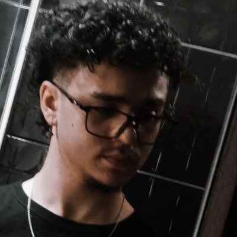
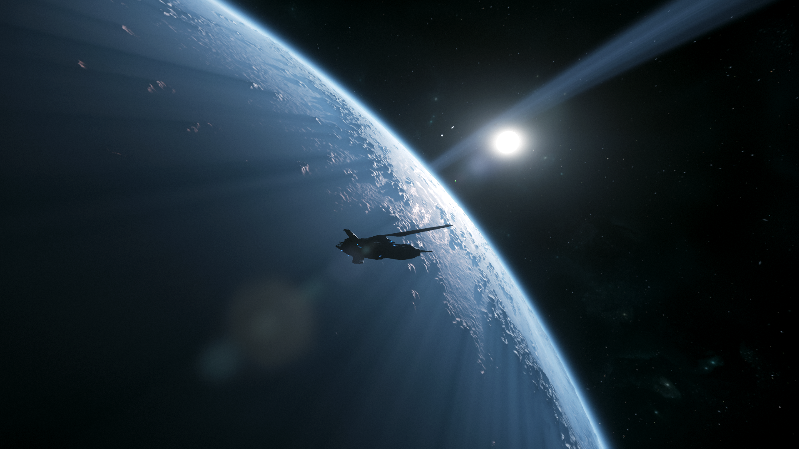
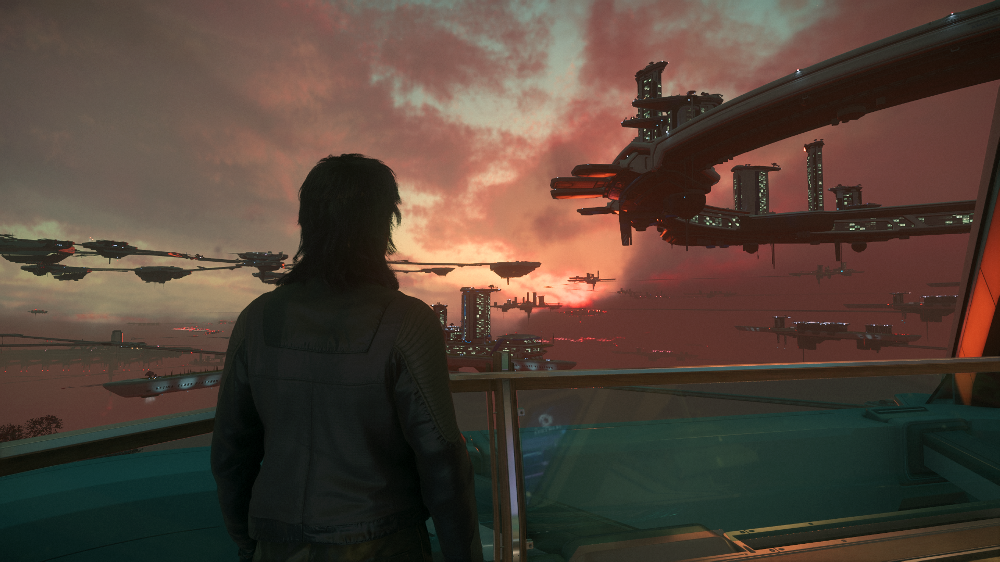

Adryan Oliveira - Me adicione no LinkedIn
Adryan Oliveira - Me adicione no LinkedIn BitThzn - Acessa meu repositório público no GitHub
BitThzn - Acessa meu repositório público no GitHub Instagram - Siga-me no Instagram
Instagram - Siga-me no Instagram YouTube - Assista meus vídeos
YouTube - Assista meus vídeos
Oi, Meu nome é Adryan Oliveira, tenho 20 anos, e sou Estudante de Tecnologia da Informação e desenvolvedor júnior em formação, com foco em Cibersegurança.
Aqui em baixo deixarei minhas redes sociais, caso queira me conhecer melhor ou entrar em contato comigo, fique a vontade para me seguir ou mandar uma mensagem, será um prazer falar com você. logo a baixo deixarei tambem duas imagens que tirei recentement enquanto jogava star citizen :)
Tenho contato com programação desde 2021, com boa base em lógica de programação e familiaridade com diferentes tecnologias e linguagens. Possuo conhecimentos em redes de computadores, análise de sistemas e experiência prática com manutenção e suporte técnico,
o que me proporciona uma visão sólida sobre infraestrutura e funcionamento de ambientes computacionais. Atualmente, direciono meus estudos para a área de segurança da informação, com interesse em análise de vulnerabilidades, redes e fundamentos de pentest.
Busco minha primeira oportunidade para aplicar meus conhecimentos na prática e evoluir na área de cibersegurança. Tenho Hobby em videogames, gosto muito de destrair minha cabeça jogando jogos como Star citizen que atualmente émeu jogo favorito.
Adryan Oliveira - Me adicione no LinkedIn BitThzn - Acessa meu repositório público no GitHub Instagram - Siga-me no Instagram YouTube - Assista meus vídeos

~Ghost, the Shadow~